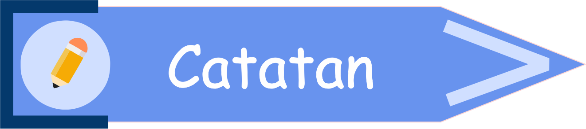
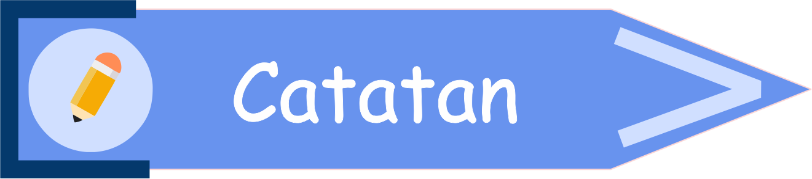

3.2 HIMPUNAN BAGIAN
 Prasyarat (klik saya)
Prasyarat (klik saya)- Siswa sudah mampu menyatakan notasi dari suatu himpunan.
- Siswa sudah mampu menyebutkan anggota dari suatu himpunan.
- Siswa sudah mampu menyatakan himpunan.
- Siswa sudah mampu menyatakan banyak anggota dari suatu himpunan.
- Siswa sudah mampu menyatakan himpunan kosong.
- Siswa sudah mampu menggambar diagram venn.
 Tujuan Pembelajaran (klik saya)
Tujuan Pembelajaran (klik saya)
Setelah mempelajari topik ini, diharapkan :
- Siswa mampu menentukan himpunan yang menjadi himpunan bagian dari himpunan lain.
- Siswa mampu menentukan himpunan-himpunan bagian yang mungkin dibuat dari suatu himpunan.
- Siswa mampu menyatakan banyak himpunan bagian yang mungkin dibuat dari suatu himpunan.

Amatilah Tabel 3.2.1 di bawah ini!
|
|
|
|
Jawaban kamu tepat!
Ups! Jawaban kamu masih keliru.
Semua anggota himpunan A juga menjadi anggota himpunan B |
|
|
|
|
|
Jawaban kamu tepat!
Ups! Jawaban kamu masih keliru.
Semua anggota himpunan A juga menjadi anggota himpunan C |
|
|
|
|
|
Jawaban kamu tepat!
Ups! Jawaban kamu masih keliru.
Tidak semua anggota himpunan B juga menjadi anggota himpunan C |
|
Berdasarkan Tabel 3.2.1 diatas, didapatkan syarat himpunan bagian, yaitu :

*catatlah ke dalam buku catatanmu 😄
Jika semua anggota dari sebuah himpunan juga terkandung di dalam himpunan lain, maka himpunan yang pertama adalah himpunan bagian dari himpunan yang kedua.

*catatlah ke dalam buku catatanmu 😄
- Himpunan bagian dinotasikan dengan ⊂ (subset).
- Bukan himpunan bagian dinotasikan dengan ⊄